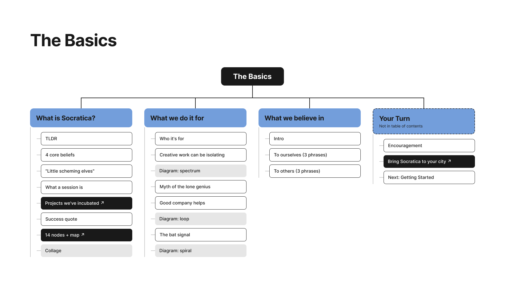
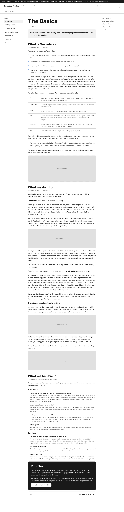
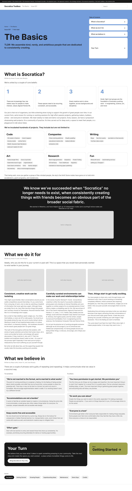
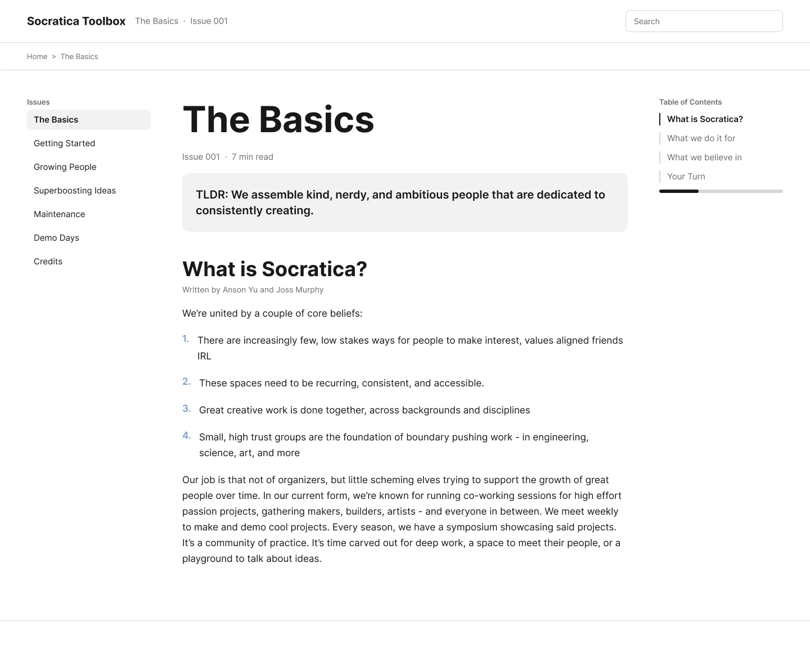
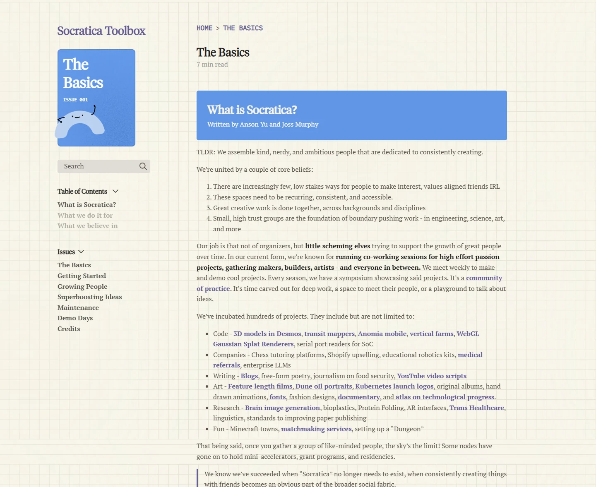
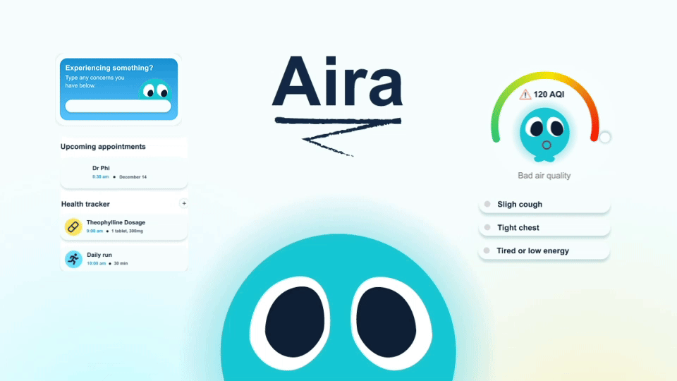

Socratica Toolbox
At a glance
Monthly visitors
Attendees worldwide
User paths
Background information
The product
Socratica is a community of people working on ambitious projects together. It started in Waterloo, and it now runs as a network of "nodes": independent groups around the world that host their own co-working sessions and demo days. The Socratica Toolbox is the guide those hosts work from. It collects what past organizers have learned into a set of illustrated issues, from The Basics and Getting Started through Growing People, Superboosting Ideas, Maintenance and Demo Days, each written in collaboration with the hosts who lived it.
The challenge
The Toolbox already existed, but every issue was a plain page of long-form text. The advice was worth reading, and people weren't reading it: lists of projects ran together into walls of text, and sections like Your Turn sat at the bottom where most readers never reached them. The content didn't need rewriting. It needed a page that pulled people through it.
Design cycles
Plan
I started with The Basics, the first issue every new host reads, and mapped it block by block. Each of its four sections got a column listing what it actually contains: text, diagrams, quotes and links out to other pages. The map showed where the reading slowed down and what could be pulled out of the paragraphs, and it became the template for the other issues.

Design
Each issue got a coloured cover and its own hand-drawn character, so the homepage reads more like a shelf of zines than a wall of links. For the pages themselves, I prototyped The Basics in two opposite directions to see how far the layout could move from the original.
The long-form reader keeps the article as one continuous page and improves what's around it: issues on the left, a contents list on the right that tracks where you are, and a TLDR box up top. It's the safe option, and the closest to what was already there.
The chunked cards go the other way, breaking every section into pieces you can take in at a glance: numbered belief cards, project categories as tag groups, and three columns side by side. It's built for skimming, at the cost of reading like an article.


Check feasibility
Before anything was built, I walked the interactions through with the engineers to see which ones we could ship and keep accessible. The rule we kept coming back to: the issues are written in markdown by contributors, so anything they couldn't keep up on their own was simplified or cut, and adding a new issue would never need a developer.
Search barTyping pulls up matching passages from across the issues, and picking one jumps straight to that spot, so a host looking for one answer doesn't have to read a whole issue to find it.
Table of contentsThe contents list stays in view and highlights the section you're reading. Engineering confirmed the highlight was a small script that works off the headings contributors already write, so it shipped as designed.
Overlay jumpingLinks between issues open a preview of the section they point to before taking you there, so readers can check a reference without losing their place in the article they're reading.
Test
I put both prototypes in front of five people, with the engineers commenting alongside. Basics A felt like the site they already had, and the project list was still a wall of text. Basics B was much easier to skim, but people lost track of where they were, and engineering pointed out it meant rewriting the markdown, which contributors wouldn't keep up. So I combined them into Basics C: the long-form reader and its contents list, with the TLDR, beliefs and key quote pulled out as callouts the markdown already supports. Testers said they'd use it, and engineering signed off on shipping it.
![Feedback board from testing three versions of The Basics, with participants' sticky notes and engineers' comments. Basics A, Long-form reader: "isn't this basically the current site?", "the project list is a wall of text". Basics B, Chunked cards: "way easier to skim", "the belief cards are nice but i lost where i was", and an engineer noting it means rewriting the markdown. Basics C, Reader + cards: "ok i'd use this one", "the TLDR box at the top is all i read lol", and an engineer saying "ok this one we can ship".](../../assets/images/socratica-test-stickies.png)
Before and after
The same advice in The Basics, before and after. Before, every issue was the same plain page of text. After, each one has its own cover and character, the navigation is gathered down the left, and section headers and callouts break the reading into pieces people actually get through.

Before.

After.
What I'd do differently
Test earlier
One round of testing settled A versus B and produced Basics C. Putting rougher prototypes in front of people sooner would have got there a cycle earlier.
Plan for translation
Nodes run all over the world, and not all of them in English. Building the layout around translated text from the start would make that next step much easier.
Measure what gets used
Monthly visitors say people arrive. Tracking which sections they actually read would show which issues to expand next.
Next project
